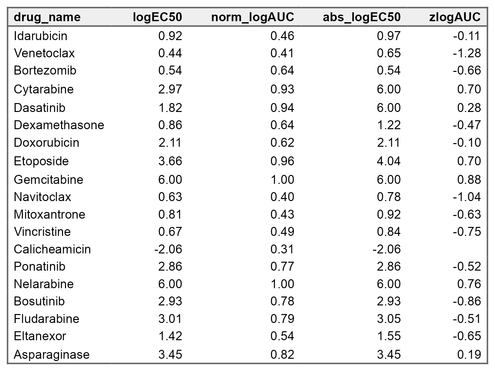
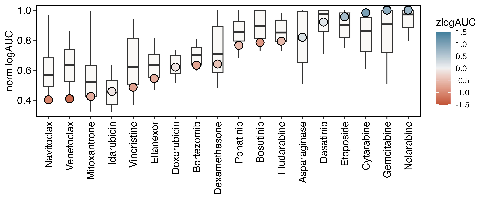

Setup
In this part we will fit a dose-response model to DRP data stored in a local Postgres database and compute drug response metrics. Finally, we will visualize dose-response fingerprints and drug distributions.
# Define the project root
here::i_am("inst/analysis.Rmd")Make a connection to the local Postgres database
con <- drpr::connect_with_config("default")Curve fitting and drug scoring
Fit dose responses with a 3-parameter log-logistic model using the drc package.
pool::dbReadTable(con, "plate_content_view") |>
drpr::cli_fit(con)Write cohort statistics (mean, standard deviation, median, IQR) from a primary DRP cohort into the database.
cohort_stats <- readr::read_csv(here::here("inst/data/cohort_stats.csv"))
pool::dbWriteTable(con, "cohort_stats", cohort_stats, append = TRUE)From the fitted dose response parameter compute derivative metrics such as absolute logEC50 and the logAUC. Use the cohort statistics to compute z-scores for the logAUC metric.
pool::dbReadTable(con, "feature_view") |>
drpr::derive_fit_features(con) |>
drpr::calculate_zscore_from_stats(con, cohort_id = 1, logAUC) |>
dplyr::select(drug_name, logEC50, norm_logAUC, abs_logEC50, zlogAUC) |>
dplyr::mutate(dplyr::across(is.numeric, ~ round(.x, 2))) |>
drpr::as_flextable(
save = TRUE,
filename = here::here("man/figures/plots/feature_table.png")
)
Visualizing data
Visualize the dose-response profiles and drug distributions
drpr::plot_profile(
con,
drug_name %in% c("Venetoclax", "Bortezomib", "Dexamethasone", "Dasatinib"),
.fg_sample_mask = sid == 1,
color_fill = zlogAUC,
limits = c(-1.5, 1.5),
quantiles = TRUE,
save = TRUE,
filename = here::here("man/figures/plots/profiles.png"),
nrow = 1,
width = 10
)
drpr::plot_distribution(
con,
.point_mask = sid == 1,
.jitter_mask = cohort_id == 1,
color_fill = zlogAUC,
sort_by = norm_logAUC,
quantiles = TRUE,
add_boxplot = TRUE,
limits = c(-1.5, 1.5),
save = TRUE,
filename = here::here("man/figures/plots/distribution.png")
)